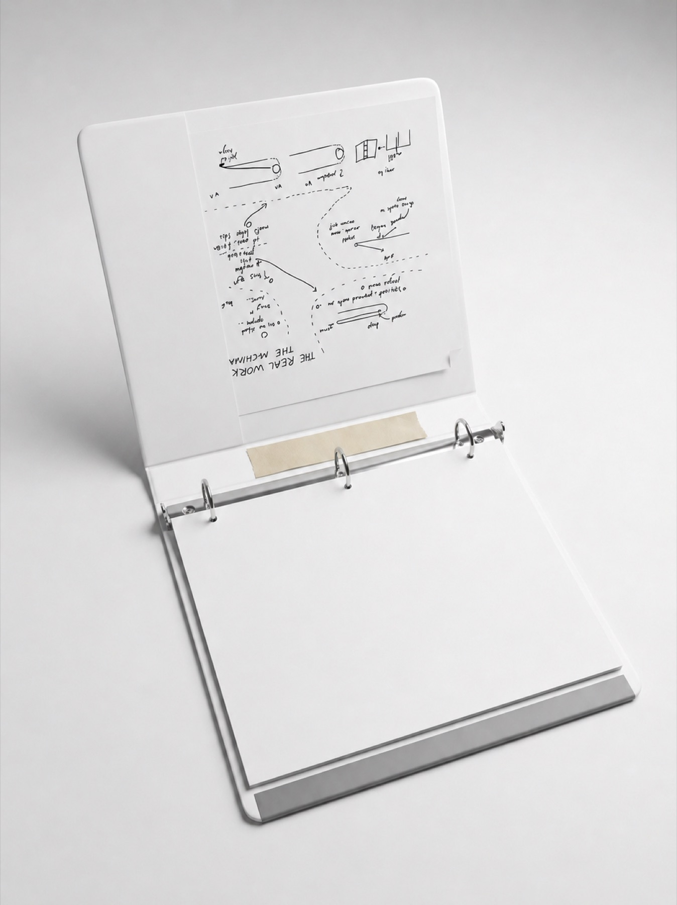
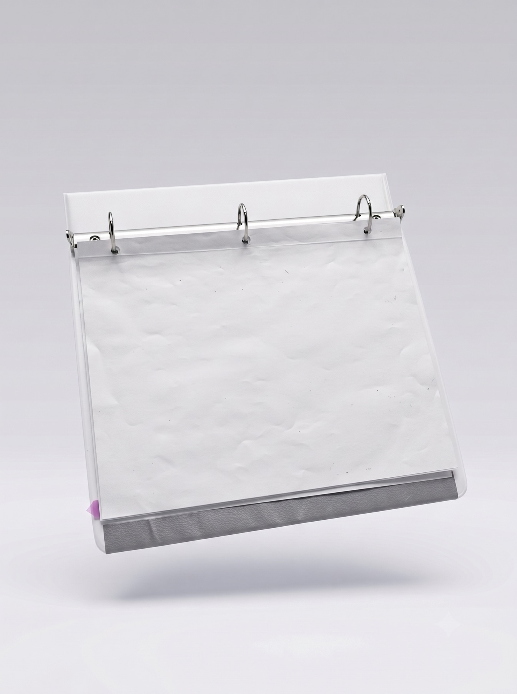
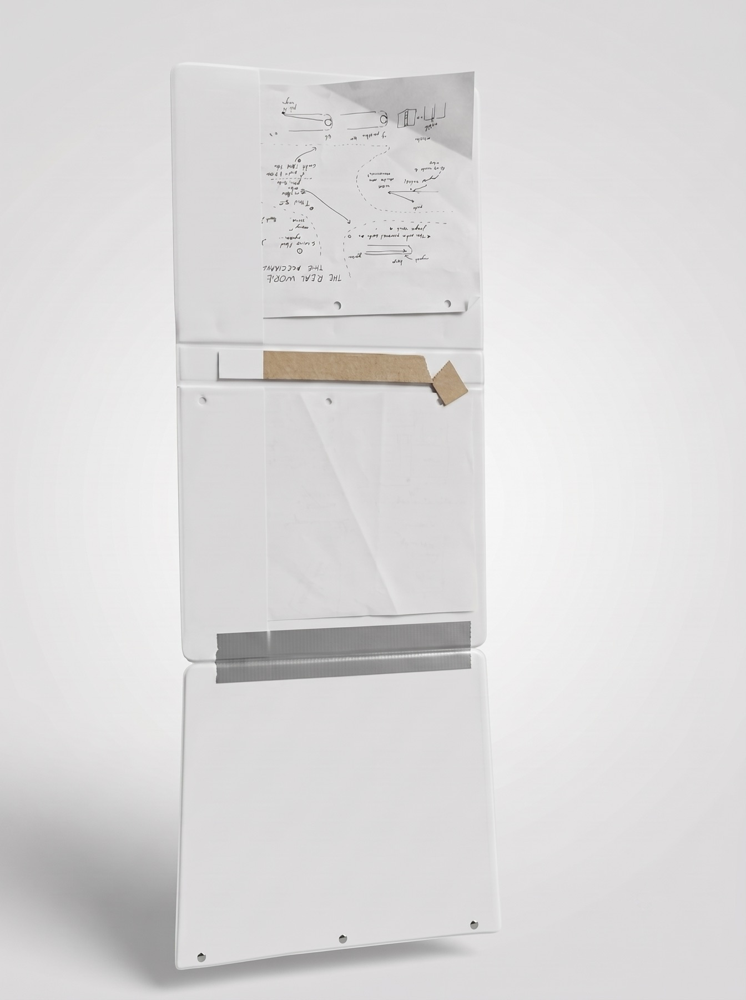
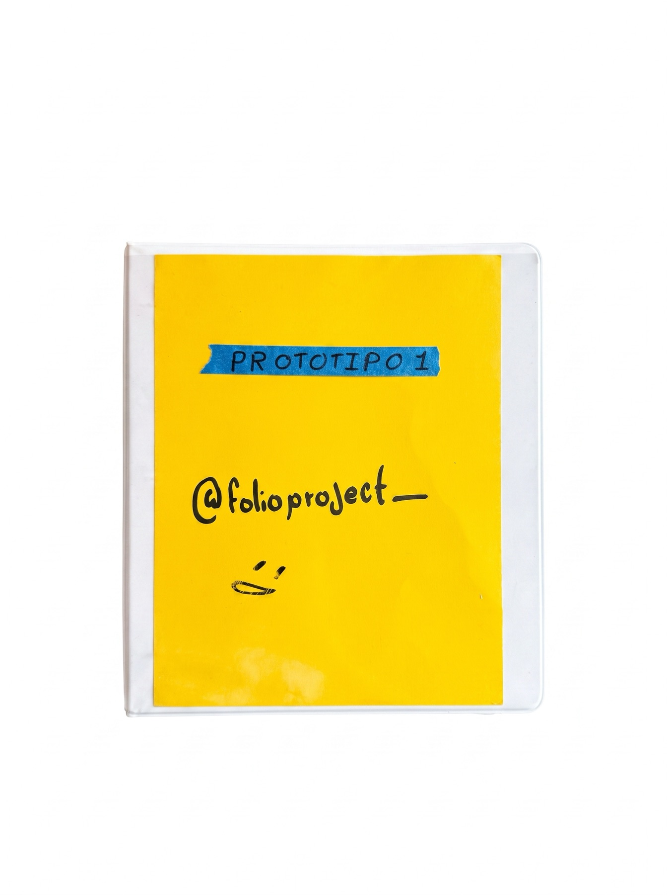

Folio separa las argollas del giro de las cubiertas: se abre plana, gira por completo y no maltrata tus hojas. Hecha a mano en México.
Déjame tu correo todavía no está a la venta ↓
Ábrela en cualquier página y se queda plana sobre la mesa, sin sujetarla y sin páginas que se cierran solas.

Las argollas viven en su propio módulo, separado del giro de las cubiertas. Tu muñeca recorre toda la hoja y tus documentos no se doblan ni se rasgan.

Tres paneles en cadena le permiten doblarse 360° hacia atrás, para escribir de pie o en espacios pequeños.
El mecanismo completo en movimiento: cada bisagra gira libre sin transmitir fuerza a los orificios de tus hojas.

Folio nació en Ciudad Acuña, Coahuila. Este es el primer prototipo funcional, construido a mano, con solicitud de modelo de utilidad ante el IMPI.
@folioproject_Folio está en desarrollo y aún no se produce. Déjanos tu correo y te escribimos cuando esté listo.
Sin spam. Solo cuando haya noticias del proyecto.